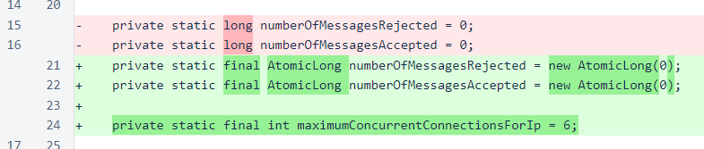
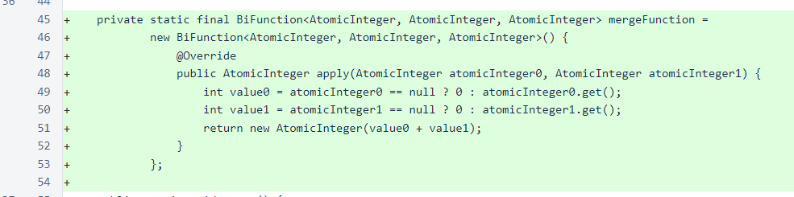
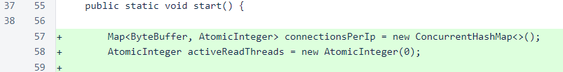
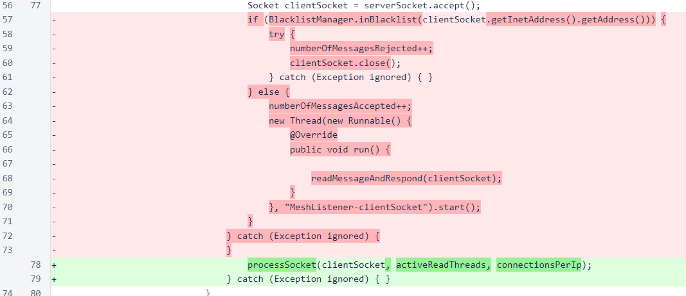
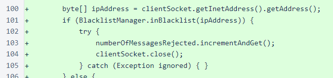
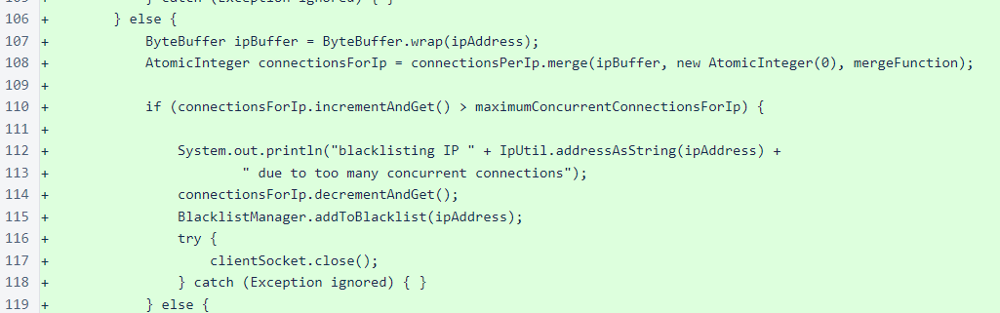
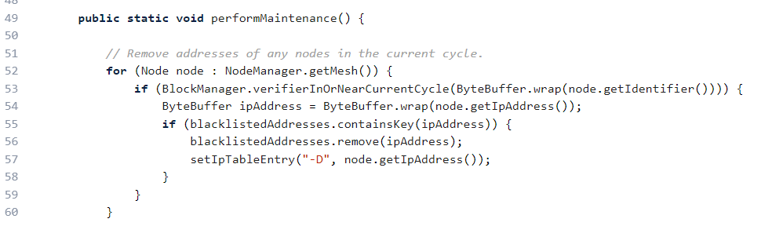
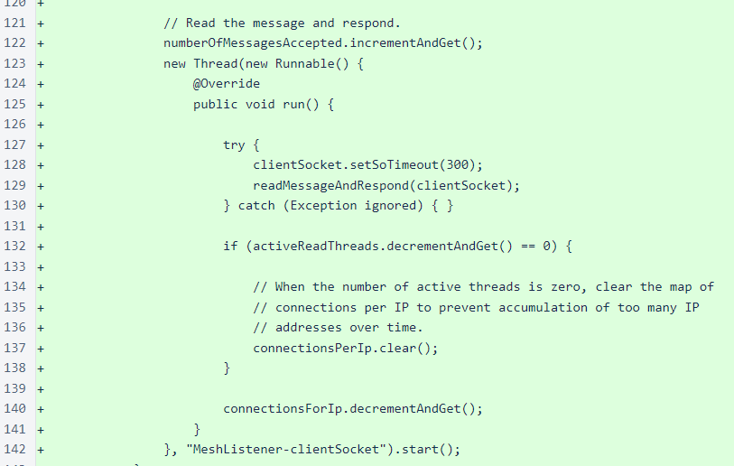

Nyzo version 495 (commit on GitHub) improves the stability of the verifier through improvements to the mesh listener.
This version does not affect the sentinel, as the sentinel does not use the MeshListener class.
Previously, the MeshListener class was especially lenient with incoming connections. This leniency made it unnecessarily easy to keep many connections to a verifier open, which could allow an attacker to disable a verifier. This version enforces a maximum amount of time that a verifier will devote to a single connection, and it also enforces a maximum concurrent number of connections that a verifier will accept from a single source.
All changes in this version are in the MeshListener class. At the top of this class, the variables that track the number of messages rejected and accepted have been changed to AtomicLong to eliminate potential concurrency issues. Also, a constant to define the maximum number of concurrent connections from a single IP has been added.
In testing, a value of 3 maximum concurrent connections per IP was sufficient to allow all normal verifier behavior, so the current maximum, 6, is twice the number of concurrent connections we would expect to see from a verifier operating normally. In the future, we will likely modify the Message class to strictly limit the number of concurrent outgoing connections to a single IP, which will allow this incoming maximum to be adjusted downward without penalizing verifiers that are attempting to behave properly.
The BiFunction interface is relatively new to Java, introduced in Java 1.8. This implementation of the interface will be used later by the map that tracks the number of connections from each IP, providing a simple sum of the counts if a merge is necessary. This merging behavior provides atomicity for the process of checking for existence of an item in a map and creating and adding it if it is not already present.
In the start() method, a Map has been added to track the number of connections per IP, and an AtomicInteger has been added to track the number of active threads. The number of active threads was initially intended only for testing, but it was found to be useful for performing cleanup on the map, so it was retained in the code.
Previously, when a connection was accepted, the readMessageAndRespond() method would be invoked as long as the source IP was not blacklisted. The logic has gotten slightly more complicated in this version, so processing of the socket has been moved into the new processSocket() method.
In processSocket(), blacklisting is handled first, as in the previous version. If iptables is being used, blacklisted IPs will be rejected outside the application, but this ensures quick rejection of blacklisted connections if iptables is not being used.
For connections from IPs not yet blacklisted, the number of active connections from the IP is checked. If the new connection causes the count to exceed the maximum, the connection is immediately closed and the IP is added to the blacklist.
At this point, it is worth noting that in-cycle verifiers are removed from the blacklist in a maintenance operation that is performed after each block is frozen. So, if an in-cycle verifier happens to trigger this new protection, the effect will be temporary.
Finally, a thread is started, as in the previous version, to read the message and respond to it. In this version, the setSoTimeout() method is invoked on the socket to ensure that reads do not block for more than 300 milliseconds. This ensures that no single connection uses an unreasonable share of resources.
When the number of active connections falls to zero, the connectionsPerIp map is cleared to avoid long-term storage of many zero values.
For this issue, ∩100,000 was awarded to a76e...2687 (transaction 1: ∩40,000, transaction 2: ∩60,000).